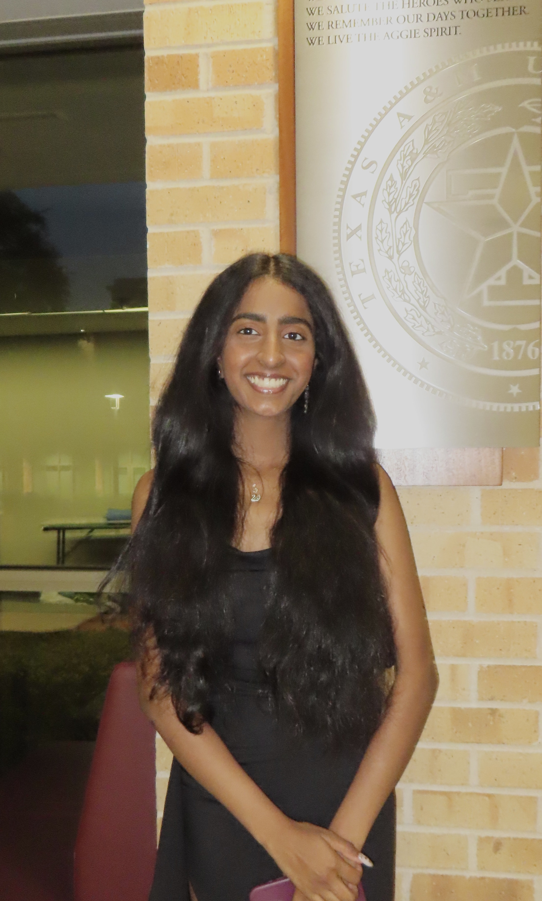

Aparna Subramaniam |
|

Portfolio Highlights
|
Hi! I am Aparna Subramaniam. I am a junior at Texas A&M
University majoring in Computer Science, minoring in Cybersecurity.
My ambition is to work in the field of Computer Science &
Information Technology, and am seeking valuable opportunities to
discover more and develop experience as an individual who is eager
to enter the world of modern technology.
Previous Roles & Experience
My Resume

Click the resume to view it larger. |